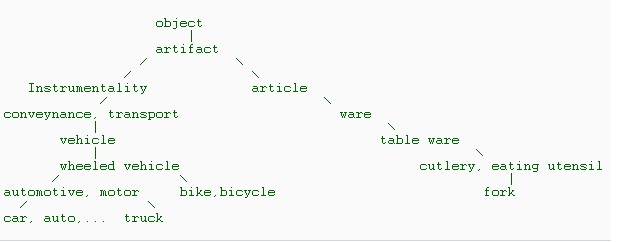

In the previous article, we presented an approach on
capturing the similarity between words that was concerned with the syntactic
similarity of two strings. Today we are back to discuss another approach that is more concerned
with the meaning of the words.
Semantic similarity is a confidence score that reflects the semantic relationship
between the meanings of two sentences.
The goals of this paper are to:
Present to you some unsupervised algorithms to capture semantic similarity between two sentences, which is heavily based on a knowledge-based resource - the WordNet semantic network.
Encourage you to work with the interesting topic of NLP.
Fortunately, there are a lot of previous scientific articles on semantic similarity and semantic relatedness measurement developed in the context of information integration and information retrieval. In discussing this topic we will refer to other research groups such as Ted Pedersen, Hirst, and P.Resnik.
WordNet
WordNet is a lexical database which is available online and provides a large
repository of English lexical items. There are multilingual WordNets for
European languages which are structured in the same way as the American WordNet.
The WordNet was designed to establish connections between four types of POS
(Parts of Speech), noun, verb, adjective, and adverb. The smallest unit in
WordNet is synset, which represents a specific meaning of a word. It includes
the word, its explanation, and the synonyms of its meaning. The specific meaning
of one word under one type of POS is called a sense. Each sense of a word is in
a different synset. Synsets are equivalent to senses = structures containing
sets of terms with synonymous meanings. Each synset has a gloss that defines the
concept it represents. For example the words night, nighttime and dark
constitute a single synset that has the following gloss: the time after sunset
and before sunrise while it is dark outside. Synsets are connected to one
another through explicit semantic relations. Some of these relations (hypernym,
hyponym for nouns and hypernym and troponym for verbs) constitute is-a-kind-of(holonymy)
and is-a-part-of (meronymy for nouns) hierarchies.
For example, tree is a kind
of plant, tree is a hyponym of plant and plant is hypernym of tree. Analogously
trunk is a part of tree and we have that trunk is meronym of tree and tree is
holonym of trunk. For one word and one type of POS, if there are more than one
sense, WordNet organizes them in the order of the most frequently used to the
least frequently used(Semcor).
WordNet .NET
Malcom Crowe and Troy Simpson had developed an open-source WordNet.Net.
Given two sentences, the measurement is to determine how meaning similarity of two sentences are, by a float score number. The higher score the more similarity meaning of two sentences are.
Steps of computing semantic similarity between two sentences:
Each sentence is firstly split up into list of words and the we remove the stop words. Stop words are frequently occurring, insignificant words that appear in a database record, article or web page , etc.
As you have already known that a word can has more than one sense that
can lead to ambiguity.
For example : the word “interest." has different meaning in two following
contexts:
•“Interest” from a bank.
•“Interest” in a subject.
WSD with original Micheal Lesk Algorithm
Disambiguation is process of finding out most appropriate sense of word is used in a given sentence. Lesk algorithm used a dictionary definitions to disambiguate a polysemous word in a context sentence. The major of his idea is counting the number of words that are shared between two glosses. The more overlapping words, the more related the senses are.
To disambiguate a word, the gloss of each of its senses is compared to the glosses of every other word in the phrase. A word is assigned that sense whose gloss shares the largest number of words in common with the glosses of the other words.
For example: Performing disambiguation for the "pine cone" phrasal, according to the Oxford Advanced Learner’s Dictionary, the word pine has 2 senses:
sense 1: kind of evergreen tree with needle–shaped leaves
sense 2: waste away through sorrow or illness.
the word "cone" has 3 senses:
sense 1: solid body which narrows to a point
sense 2: something of this shape whether solid or hollow
sense 3: fruit of certain evergreen tree
=> By comparing each two senses gloss of the
word "pine" with each of the three senses of the word "cone", it is found that
the words "evergreen tree" occurs in one
sense each of the two words. So these two senses are then declared to be the
most appropriate senses when the words "pine" and "cone" are used together.
The original Lesk algorithm begins anew for each word and does not
utilize the senses it previously assigned. This greedy method does not always
work effectively. Therefore if the computational time is not critical we should
think of an optimal senses combination by applying local search techniques such
as Tabu or Beam. The major idea behind such methods is that to reduce the
searching space by applying different heuristic. Beam searcher limits its
attention to only k most promising candidates at each stage of the search
process, where k is a predefined number. Tabu is a method which a fundamental
role is played by keeping track of features of previously visited solutions,
which makes use of memory in a limited way. It keeps a list of moves that
are forbidden to be performed in order to prevent cycling.
The extended Micheal Lesk Algorithm
The original Lesk is just used gloss or definition of word and has restricted on the overlap scoring mechanism. The extended of Lesk is developed to overcome the limitations with some improvements:
Assuming that we need to disambiguate each word in a sentence that has N is number of words, call the word to be disambiguated as target word. Below are some major steps of the extended algorithm:
1. Select a context: Due to the restriction on computational time so if N is long, we will define K context around the target word (or k-nearest neighbor) as the sequence of words starting K words to the left of the target word and ending K words to the right. This will reduce the computational space that decreasing the time. For example: If K is four, there will be two words to the left of the target word and two words to the right.
2. For each word in the selected context, we look up and list all the possible senses.
3. For each sense of a word (WordSense), we list the following relations:
(*) All of them are applied the same rule.
For example:
4. Combination all possible gloss pairs that archived at previous step and
computing the relatedness by searching for overlap. The overall score is the sum
of the scores for each relation pair.
For example: When computing the relatedness between two synsets s1 and s2, the pair
hype-hype means the gloss for the hypernym of s1 is compared to gloss for the
hypernym of s2. The pair hype-hypo means that means the gloss for the hypernym
of s1 is compared to gloss for the hyponym of s2.
-> OverallScore(s1, s2)= Score(hype(s1)-hypo(s2)) + Score(gloss(s1)-hypo(s2)) +
Score(hype(s1)-gloss(s2))...
OverallScore(s1, s2) is also equivalent to OverallScore(s2, s1).
We use a new scoring mechanism (1) that differentiates between N-single words
and N-consecutive words overlaps and effectively treats each gloss as a bag of
word. It is based on ZipF law. Each overlap which contains N consecutive words,
contributes a N^2 to the score of gloss sense combination. For example: an
overlap "ABC" has score 3^2=9 and two single overlaps "AB" and "C" has score
2^2 + 1^1=5. Algorithm to scoring overlap was presented in previous article
work.
5. Once each combination has been scored, we pick up the sense has highest
score to be the most appropriate sense for each word in the context space. After
this step, the output not only gives us the most appropriate sense but also the
associated part of speech for a word.
There is another measurements of Hirst-St.Onge which based on finding
the lexical chains between synsets.
Next, we introduce a simple method to compute the semantic similarity between two word senses: Similarity measurement based on path length. Semantic similarity is a special case of semantic relatedness where only consider the is-a relationship.
In WordNet, each part of speech words (nouns/verbs...) are organized into
taxonomies where each node is a set of synonyms (synset) represent one sense. If
a word has more than one sense, it will appear in multiple synsets at various
locations in the taxonomy. WordNet defines relations between synsets and
relations between word senses. A relation between synset is a semantic relation,
and a relation between word senses is a lexical relation. The difference is that
lexical relations are relations between members of two different synsets, but
semantic relations is relations between two whole synsets.
For instance:
Semantic
relations are hypernym, hyponym, holonym , etc.
Lexical relations are antonym relation and the derived form relation. For
example, the antonym of the tenth sense of the noun light(light#n#10) in WordNet
is the first sense of the noun dark(dark#n#1). The synset to which belongs is
{light#n#10, lighting#n#1). Clearly it makes sense that light#n#10 is an antonym
of dark#n#1, but lighting#n#1 is not an antonym of dark#n#1; therefore the
antonym relation needs to be a lexical relation, not a semantic relation.
The Path Length based measurement
To measure the semantic similarity between two synsets we use hyponym/hypernym ( or is-a relations). Due to the limitation to is-a hierarchies, we only work with "noun-noun", and "verb-verb" part of speechs.
A simple way to measure the semantic similarity between two synsets is to treat the taxonomy as an undirected grapth and measure the distance between them in WordNet. Said P. Resnik : "The shorter the path from one node to another, the more similar they are". Note that path length is measured in nodes/vertex rather than links/edges. The length of the path between two member of the same synsets is 1.
This figure shows an example of the hyponym taxonomy in WordNet used for path length similarity measurement:

In the above figure, we observe that the length between car and auto is 1, car and truck is 3, car and bicycle is 4, car and fork is 12.
A shared parent of two synsets is called as sub-summer. The least common
sub-summer (LCS) of two synset is the sumer that does not have any children that
are also the sub-summer of the two synsets. In other words, the LCS of two
synsets is the most specific subsumer of the two synsets. Back to above example,
the LCS of {car, auto..} and {truck..} is {automotive, motor vehicle},since the
{automotive, motor vehicle} is more specific than the common sub-summer {wheeled
vehicle}.
The path length gives us a simple way to compute
relatedness distance between two word senses. There are some issues need to be addressed:
- It is possible for two synsets from the same part of speech to have no common
sub-summer. Since we did not join the different top nodes of each part of speech
taxomy. So a path cannot always be found between two synsets. But if an unique
root node is being used, then there will always exist a path between any two
noun/verb synsets.
- Note that multiple inheritance is allowed in WordNet, some synsets
belong to more than one taxnonomy. So if there is more than one path between two
synsets, then the shortest such path is selected.
- Lemmatization : when looking up a word in WN, the word is first lemmatized. So
the distance between "book" and "books" is 0 since thay are identical. But
"Mice" and "mouse" ?
- This measurement just only compare the word senses which have same part of
speech(POS). This means that we do not compare a noun and a verb because they
are located in different taxonomy. We just consider the words that are nouns ,
verbs, or adj, respectively. We will use lexical of Jeff Martin, when
considering a word, we first check if it is a noun and if so we will treat it as
a noun and its verb or adj will be disregarded. If it is not a noun, we will
check if it is a verb...
- Compound nouns like "travel agent" will be treated as two single word through
the tokenization.
Measuring similarity (MS1):
There are many proposal to measuring semantic similarity between two synsets:
Wu & Palmer, Leacock & Chodorow, P.Resnik. In this work, we experimented
with two simple measurement:
Sim(s, t) = 1/distance(s, t).
s to t using node counting.
Measuring similarity (MS2):
This formula has been used in previous article, which not only take into
account the length of the path but also the the order of the sense
involved in this path.
Sim(s,t)=SenseWeight(s)*SenseWeight(t) / PathLength
s and t: denote the source and target
words being compared. SenseWeight: denotes a weight calculated according to the
order of this sense and the count of total senses. PathLength: denotes the length of the connection path from
s to t. Assuming we have to capture semantic between two
sentence X and Y, we denote m to be length of X, n to be length of Y. After the word sense disambiguation step, we have the list of
word-senses
that are most appropriate sense for every words in two sentence.
The major steps can be described as following:
1. Building a semantic similarity relative matrix r[m, n] of each pair of
word senses, where r[i,
j] is semantic simiarity between the most appropriate sense of word at position
i of X and the most appropriate sense of word at position j of Y. Thus,
r[i,j] is also weight of edge connect from i to j. If a word is
not existed in the dictionary we use the edit-distance similarity instead, for
example : an abbreviation likes CTO (Chief of Technology Officer).
2. The computation of overall semantic similarity score now is reduced to problem of
solving the maximum total weight of bipartite graph where X and Y is two sets of
disjoint nodes. We use the hungarian method to solve this problem, refer
to our previous article ().
If computational time is critical, we can use a simple quick heuristic method as
following:
Pseudo-code:
scoreSum <- 0;
foreach (X[i] in X){
bestCandidate <- -1;
bestScore <- -maxInt;
foreach (Y[j] in Y){
if (Y[j] is still free && r[i, j] > bestScore){
bestScore <- R[i, j];
bestCandidate <- j;
}
}
if (bestCandidate != -1){
mark the bestCandidate as matched item.
scoreSum <- scoreSum + bestScore;
}
}
3. The match result from previous step are aggregated into a single similarity value for two sentences. There are many strategies to acquire an overall combined similarity value for sets of matching pairs. So far, we have shown two simple formula of computing semantic similarity between two word-senses. For each cases we apply an appropriate strategy.
/ // Any source code blocks look like this //
Time restricted is also a problem, but whenever possible we would like to do :
- Extending the algorithm with supervised learning with such method like
Bayesian Inference Model.
- Extending the unsupervised library with more well-known algorithms.
We have presented a simple approach to capture semantic similarity. This work
has some restriction and we hopefully extend it in near future. We are not a NLP
research group, so what we have brought here may have many restrictions.
There is a Perl open source package of semantic similarity from T.Pederson.
Unfortunately We do not know Perl, it would be very nice if anyone can migrate
it to .NET. We stop here and hope that there will have more you
work on WordNet.Net to develop this open source to be more useful.
Many thanks to:
WordNet Princeton, M.Crowe, T.Pedersen - his team(S.Banerjee,
J.Michelizzi ...) , P.Resnik, Hirst - S.T.Onge ... the NLP research community
for their tremendous innovative works.
We would like to thank M.A.Warin, C.Lemon, Richard.N, who had provided helpful document resources and comments during this work.
9/1/2005: Coding.
9/17/2005: Writing article.